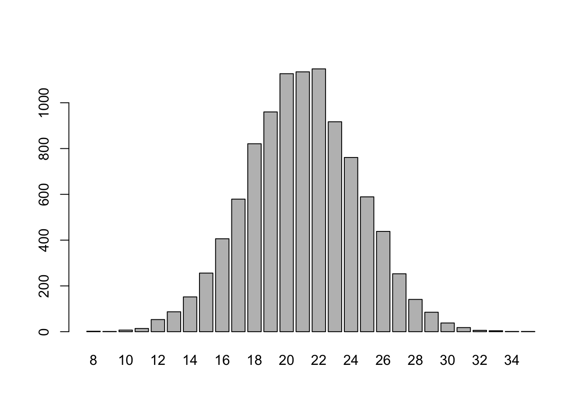
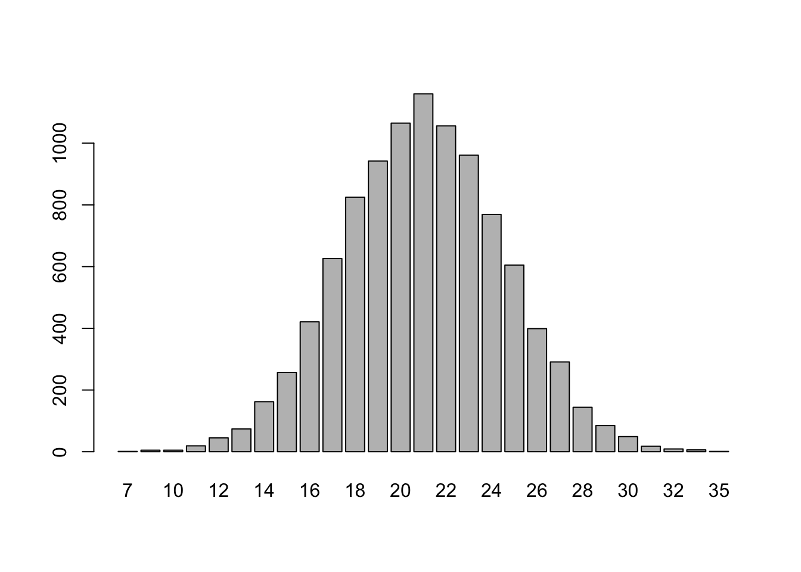

A Sampling in R
A.1 Data vectors
Use the c() command to enter an ordered list of elements. Separate entries with commas. The resulting object in R is called a data vector, or vector.
vector types
We see vectors of three types: numeric, character, and logical.
A character vector consists of a list of strings. Strings are entered with quotes.
The vector x below is numeric. No quotes, just numbers.
A logical vector consists of a list of TRUEor FALSE elements (all caps!):
We can check the vector type with the typeof() command:
## [1] "character"If you mix numbers and strings in a vector, R treats it as a character vector:
## [1] "character"We may wish to place data vectors into a two-dimensional structure such as a matrix or a data frame.
Matrices
Create a matrix from a vector with the matrix() command, specifying how many rows, and whether we enter the data in the matrix by row, or by column.
## [,1] [,2] [,3]
## [1,] "a" "a" "a"
## [2,] "b" "b" "b"
## [3,] "c" "c" "c"
## [4,] "d" "d" "d"## [,1] [,2] [,3] [,4]
## [1,] "a" "b" "c" "d"
## [2,] "a" "b" "c" "d"
## [3,] "a" "b" "c" "d"data frames
A data frame links related vectors as columns in an array via the data.frame() command.
a = c("McMinnville","Denver","Minneapolis","Charleston")
x = c(45.21,39.74,44.98,32.78)
y = c(123.19,104.99,93.26,79.93)
df = data.frame(city = a, lat = x, long = y)
df## city lat long
## 1 McMinnville 45.21 123.19
## 2 Denver 39.74 104.99
## 3 Minneapolis 44.98 93.26
## 4 Charleston 32.78 79.93Data frames are the most common way to manage related data vectors in R.
common vector commands
Here’s a vector of Hank Aaron’s home run totals in each of his MLB seasons:
With hr loaded into your session, you can refer to it by name when you want to extract features of it. Here are some commonly used commands on numeric vectors:
length(hr), number of elements in the vector (number of seasons Hank played)sum(hr), the sum of the vector (total career home runs)mean(hr), the mean of the vector (average HR per season)max(hr), the max (best HR total in a season)sd(hr), standard deviationdiff(hr)returns a vector whose elements are the differences between consecutive elements in the vectorhrcumsum(hr)returns a vector whose elements are the cumulative sum of the vectorhrrev(hr)returns the vector in the reverse order
Behold:
## [1] 14 -1 18 -14 9 1 -6 11 -1 -20 8 12 -5 -10 15 -6 9 -13 6
## [20] -20 -8 -2## [1] 13 40 66 110 140 179 219 253 298 342 366 398 442 481 510 554 592 639 673
## [20] 713 733 745 755Comparison Operators
We compare things in R with various comparison operators, each one returning TRUE or FALSE:
- equal to
== - not equal to
!= - less than
< - less than or equal to
<= - greater than
> - greater than or equal to
>=
A few examples:
## [1] TRUEUse double equal signs == to see whether two things are equal:
## [1] TRUE## [1] FALSEx = 3 # this defines the variable
x^2+3*x == 12 #this asks whether x^2 + 3*x equals 12 for the currently stored value of x (x=3 in this case)## [1] FALSELogical vectors arise when we give R a proposition involving a vector:
## [1] FALSE TRUE FALSE TRUEchecking membership
One can ask whether a particular element is contained in a vector with the %in% command.
## [1] FALSE## [1] TRUEsum() and which()
The sum() command on a numeric vector adds the elements of the vector, as we saw above with sum(hr).
The sum() command on a logical vector returns the number of TRUE elements in the vector.
## [1] 4We can thus easily count the number of elements in a vector meeting some condition:
## [1] 88 seasons with at least 40 HR?!! Of course! 8! Ok, which seasons?
## [1] 4 7 9 10 13 16 18 20The which() command returns the indices of the vector at which the condition being tested has been met. So Hank hit 40 or more HR in seasons 4, 7, 9, 10, 13, 16, 18, and 20.
extracting elements
Recall Hank Aaron’s home runs by season:
## [1] 13 27 26 44 30 39 40 34 45 44 24 32 44 39 29 44 38 47 34 40 20 12 10We can extract an element of a vector by indicating its [position]:
## [1] 26Or we can specify several elements:
## [1] 13 26 30comparing vectors
We can count the number of positions in which two vectors of the same length agree
## [1] 1We can find the position(s) at which they agree
## [1] 4and list the matching value(s):
## [1] 8vector arithmetic
We can do element-wise arithmetic on two vectors of equal length, such as addition, subtraction, multiplication, divsiion, and exponentiation
| Operation | Result | |
|---|---|---|
v + w |
0, 5, 8 | |
v - w |
-2, -3, -2 | |
v * w |
-1, 4, 15 | |
v / w |
-1, 0.25, 0.6 | |
v^w |
-1, 1, 243 |
We also have scalar multiplication,
## [1] -8 8 24and, don’t tell your vector calc prof, but you can add a scalar to each element in a vector:
## [1] 7 9 11concatenate vectors
The c() command allows you to concatenate vectors:
## [1] 1 2 3 4 5 6We can add an element to a vector A via concatenation:
## [1] "Will" "Lucas" "Mike" "Dustin" "Eleven"Notice, the vector A currently has 5 elements. We can add a 6th element can also to A directly:
## [1] "Will" "Lucas" "Mike" "Dustin" "Eleven" "Max"A.2 Special vectors
consecutive integers
The integers 1 to n can be entered by typing 1:n. For instance, we could define a 20 sided die by entering
More generally, entering a:b creates a vector of consecutive integers starting with a and ending with b (even if a is greater than or equal to b).
## [1] 8 7 6 5 4 3 2letters
## [1] "a" "b" "c" "d" "e" "f" "g" "h" "i" "j" "k" "l" "m" "n" "o" "p" "q" "r" "s"
## [20] "t" "u" "v" "w" "x" "y" "z"LETTERS is the capitalized version of the letters vector.
rep()
The rep() command lets us build a vector with lots of repeated elements.
Example A.1 Let’s say we want to create a bag of skittles with this color distribution: 40 red, 30 orange, 25 yellow, 60 green, and 20 purple.
The rep() command let’s us do this quickly:
- first enter the distinct items (as a vector with the c() command!),
- then enter how many times each occurs (as a vector!):
A.3 Sampling
We use the sample(x,...) command to sample from vector x.
For instance, we can draw a random sample of size 2 from hr:
## [1] 20 44Here’s another example. Let’s grab 20 skittles at random from the bag skittles we created in example A.1 and count how many orange ones we get:
## grab
## green orange purple red yellow
## 3 2 1 7 7The table() command counts how many of each color :).
We could have found the orange count directly with
## [1] 2sample() options
Typically, we provide the sample() command with 3 or 4 arguments, in this order:
x, the vector we sample fromsize, the size of the samplereplace, whether you sample with or without replacement (default = FALSE)prob, custom probabilities for the sampling of elements (default = equal probability for all elements inx)
If you enter your arguments in the order x=, size=, replace=, prob= then you do not need to specify the variable names.
If you do not specify their value, the sample() command assumes the following default values:
size= the length of the vectorreplace= FALSEprobis set so all elements in the vector have equal probability of being chosen.
Here are handy special cases, illustrated with this vector:
Permutations
Use sample(x) to generate a random permutation of x:
## [1] "hedgehog" "cat" "rabbit" "dog"Repeated sampling of 1 element
Use sample() to simulate picking one elemnt of animals \(n\) times by settingsize = n and replace = TRUE.
Example; Draw one animal from the set 1000 different times and summarize the picks with a table.
## picks
## cat dog hedgehog rabbit
## 232 234 263 271And the winner is… rabbit!
Or, since we fear rabbits and love dogs, we can do repeated sampling of a single element with custom probabilities:
## picks2
## cat dog hedgehog rabbit
## 173 413 317 97Nice!
Remember, the default option for sample() is to sample without replacement, and with equal probabilities.
Sample without replacement
Task Pick 4 students at random from a class of 9 to race around Taylor Hall. (Assumes we have numbered the students 1-9).
## [1] 4 1 5 6Sample with replacement
Task
On twelve consecutive days, ask one student at random, in a class of size 9, to write a solution on the board.
## [1] 7 5 1 4 1 8 8 7 4 7 5 8Sample with custom probabilities
Task
Roll a weighted 6 sided die with the following probability distribution 100 times and summarize the results.
| \(x\) | 1 | 2 | 3 | 4 | 5 | 6 |
|---|---|---|---|---|---|---|
| \(p(x)\) | .2 | .1 | .05 | .4 | .1 | .15 |
## rolls
## 1 2 3 4 5 6
## 16 12 4 45 5 18Example: Lefties
Task
8% of a population is left-handed. Draw a random sample of 45 people from the population and record the number of lefties.
One approach: build a large population with these features and then draw 45 people from it without replacement.
pop=rep(c("L","R"),c(800,9200)) # a population of 10,000 people, 800 of them lefties
table(sample(pop,size=45)) ##
## L R
## 3 42A second approach: sample with replacement 45 times from a “two-sided” die with customized probabilities
##
## L R
## 3 42A third approach: Use a binomial distribution (later)
A.4 Repeated Sampling
Let’s say we have a huge urn full of orange and blue marbles, and 42% of them are orange. We can use repeated sampling to approximate the sampling distribution for the number of orange marbles we would draw in a sample of, say, 50 marbles. The sampling distribution provides information about what sorts of orange marble counts should we expect, and how often should we expect these counts?
Repeated sampling can estimate this sampling distribution. Here are two methods for achieving repeated sampling in R.
using a for loop
The code below creates a vector called orange_counts that, eventually, after the for loop has completed, has 10000 entries. Each entry in this vector gives the number of orange marbles drawn from the urn from a random sample of 50 marbles.
colors=c("orange","blue")
orange_counts=c() #a vector for storing the results of each trial
for (i in 1:10000){
orange_counts[i]=sum(sample(colors,50,replace=TRUE,prob=c(.42,.58))=="orange")
}We know that table(orange_counts) would display the counts of each of the unique values occuring in orange_counts. We can visualize these counts with a barplot():

using replicate()
The replicate() command essentially does the above for loop for us :) The command replicate(n,expr)will evaluate expr n times, and store the results.
colors=c("orange","blue")
orange_counts =
replicate(10000,
sum(sample(colors,50,replace=TRUE,prob=c(.42,.58)) == "orange")
)Again, we can summarize the frequency with which each value of orange_counts occurs with table(), and visualize this frequency table with a barplot:

In addition, we can calculate summary statistics to put numbers to qualitative descriptions of the distribution of values in orange_counts such as center and spread. These statistics help us answer the question of what sorts of orange counts to expect.
| statistic | command | result |
|---|---|---|
| mean | mean(orange_counts) |
21.0154 |
| standard deviation | sd(orange_counts) |
3.479134 |
| five number summary | fivenum(orange_counts) |
8, 19, 21, 23, 37 |
A.5 Summary of R commands
defining vectors
| Command | Description | Example |
|---|---|---|
c() |
List the elements | x = c("a","c","c","z","z","z") |
a:b |
Consecutive integers from a to b |
8:4 returns the vector 8, 7, 6, 5, 4 |
rep() |
Build a vector from a frequency table | rep(c("y","n"),c(3,2)) returns y, y, y, n, n |
seq() |
Arithmetic progression (first,last,step) | seq(0,1,.2) returns 0, 0.2, 0.4, 0.6, 0.8, 1 |
summarizing vectors
| Command | Description |
|---|---|
typeof(x) |
the vector type of x (usually character, numeric, or logical) |
length(x) |
the length of x (how many elements it has) |
table(x) |
the frequency table (which values occur in x along with how often each value occurs) |
sampling from vectors
| Sampling Options | Example with x = 1:6 |
|---|---|
permutation of x |
sample(x) = 4, 6, 3, 5, 1, 2 |
| sample \(n\) elements without replacement | sample(x,3) = 1, 5, 2 |
| sample \(n\) elements with replacement | sample(x,5,replace=T) = 4, 4, 6, 2, 3 |
| sample with custom probabilities | sample(x,10,replace=T,prob= c(0,.2,0,.5,.1,.2)) = 2, 6, 6, 5, 4, 2, 4, 4, 6, 4 |